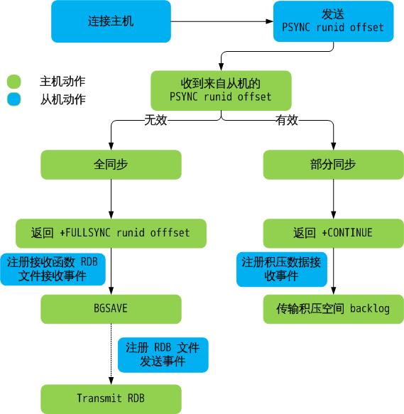

主从数据同步机制概述
redis 主从同步有两种方式（或者所两个阶段）：全同步和部分同步。
主从刚刚连接的时候，进行全同步；全同步结束后，进行部分同步。如果有需要，slave 在任何时候都可以发起全同步。redis 策略是，无论如何，首先会尝试进行部分同步，如不成功，要求从机进行全同步，并启动 BGSAVE……BGSAVE 结束后，传输 RDB 文件；如果成功，允许从机进行部分同步，并传输积压空间中的数据。

如需设置 slave，master 需要向 slave 发送 SLAVEOF hostname port，从机接收到后会自动连接主机，注册相应读写事件（syncWithMaster())。
// 修改主机
void slaveofCommand(redisClient *c) {
if (!strcasecmp(c->argv[1]->ptr,"no") &&
!strcasecmp(c->argv[2]->ptr,"one")) {
// slaveof no one 断开主机连接
if (server.masterhost) {
replicationUnsetMaster();
redisLog(REDIS_NOTICE,"MASTER MODE enabled (user request)");
}
} else {
long port;
if ((getLongFromObjectOrReply(c, c->argv[2], &port, NULL) != REDIS_OK))
return;
// 可能已经连接需要连接的主机
/* Check if we are already attached to the specified slave */
if (server.masterhost && !strcasecmp(server.masterhost,c->argv[1]->ptr)
&& server.masterport == port) {
redisLog(REDIS_NOTICE,"SLAVE OF would result into synchronization with the master we are already connected with. No operation performed.");
addReplySds(c,sdsnew("+OK Already connected to specified master\r\n"));
return;
}
// 断开之前连接主机的连接，连接新的。 replicationSetMaster() 并不会真正连接主机，只是修改 struct server 中关于主机的设置。真正的主机连接在 replicationCron() 中完成
/* There was no previous master or the user specified a different one,
* we can continue. */
replicationSetMaster(c->argv[1]->ptr, port);
redisLog(REDIS_NOTICE,"SLAVE OF %s:%d enabled (user request)",
server.masterhost, server.masterport);
}
addReply(c,shared.ok);
}
// 设置新主机
/* Set replication to the specified master address and port. */
void replicationSetMaster(char *ip, int port) {
sdsfree(server.masterhost);
server.masterhost = sdsdup(ip);
server.masterport = port;
// 断开之前主机的连接
if (server.master) freeClient(server.master);
disconnectSlaves(); /* Force our slaves to resync with us as well. */
// 取消缓存主机
replicationDiscardCachedMaster(); /* Don't try a PSYNC. */
// 释放积压空间
freeReplicationBacklog(); /* Don't allow our chained slaves to PSYNC. */
// cancelReplicationHandshake() 尝试断开数据传输和主机连接
cancelReplicationHandshake();
server.repl_state = REDIS_REPL_CONNECT;
server.master_repl_offset = 0;
}
// 管理主从连接的定时程序定时程序，每秒执行一次
// 在 serverCorn() 中调用
/* --------------------------- REPLICATION CRON ----------------------------- */
/* Replication cron funciton, called 1 time per second. */
void replicationCron(void) {
......
// 如果需要（EDIS_REPL_CONNECT），尝试连接主机，真正连接主机的操作在这里
/* Check if we should connect to a MASTER */
if (server.repl_state == REDIS_REPL_CONNECT) {
redisLog(REDIS_NOTICE,"Connecting to MASTER %s:%d",
server.masterhost, server.masterport);
if (connectWithMaster() == REDIS_OK) {
redisLog(REDIS_NOTICE,"MASTER <-> SLAVE sync started");
}
}
......
}